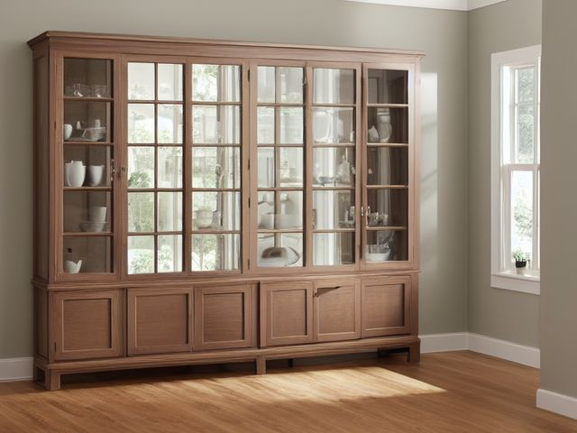

Dining Room micro zone
The China or Display Cabinet
The china or display cabinet, in the Dining Room. Keep the good tableware safe, visible, and genuinely usable. Plates stacked no more than eight high with felt between them, cups standing single file rather than nested, glasses rim up on a clean liner, tureens on the bottom shelf, the cabinet strapped to a wall stud, and a photo of the finished shelves taped inside the door.
One session: 45-75 min, close to half of it is hand-washing and drying.
The short version
- Sort. Take every piece out and split it into three groups: complete sets, chipped
- Straighten. Tureens and heavy serving pieces on the bottom shelf, plates and bowls at hand height
- Shine. Wash by hand in a plastic basin with a towel in the bottom
- Safety. Strap the cabinet to a wall stud, because a tall glass-fronted case loaded
- Standardize. Photograph the finished shelves and tape the picture inside the door
- Sustain. After any meal that used the good china it is hand-washed, dried
Each step in full, with what to have on hand and what done looks like, below.
Where it is
Dining Room
5 micro zones, one session each
- 1The Dining Table
- 2The Sideboard Surface
- 3The Sideboard Storage
- 4The China or Display Cabinet
- 5The Beverage or Coffee Station
What done looks like
Keep the good tableware safe, visible, and genuinely usable.
- Plates stacked no more than eight high with felt between them
- Cups standing single file rather than nested
- Glasses rim up on a clean liner
- Tureens on the bottom shelf
+ 2 more on this page
What done looks like
Plates stacked no more than eight high with felt between them, cups standing single file rather than nested, glasses rim up on a clean liner, tureens on the bottom shelf, the cabinet strapped to a wall stud, and a photo of the finished shelves taped inside the door.

Check these before you start
- Fall, cut, or crushA tall glass-fronted cabinet loaded with heavy plates is the largest tip-over risk in this room, and its shelves make an inviting ladder for a small child.
- Poison, choke, or strangleDecorative antique and hand-painted pieces of unknown origin can carry lead in the glaze, particularly on gilt rims and bright reds. Display them, but keep acidic food and drink off them.
Which of these is true here?
Match what you are actually seeing in the china or display cabinet to why it keeps happening, then start at the pass that fixes that, not the top of the list.
There are twelve place settings of china from a relative behind this glass, more than the largest meal you've actually hosted in years, and deciding what to do with the rest feels impossible
- It's not really china anymore, it's a person, and sorting it feels like a betrayal. Confirm in 30 seconds: Ask if you would buy this again today for what it does. If the answer is no but you still cannot decide, the hold is sentimental. If that checks out, start at Sort.
- Nobody's actually counted the largest meal hosted against the number of settings kept. Confirm in 30 seconds: Pick up one piece. If your first thought is a verb (pay, sign, call, decide) rather than a place, it needs a decision, not a home. If that checks out, start at Sort.
- Twelve settings genuinely doesn't fit this cabinet's shelves at eight plates high with felt between each, so stacks run taller than they should. Confirm in 30 seconds: Put back only what belongs here. If it still will not close, or still stacks four deep, the capacity is the problem, not the habit. If that checks out, start at Sort.
This cabinet has never been strapped to the wall, and its shelves are exactly the height a small child would use as a ladder
- It's a bigger job than a quick tidy, so it keeps getting pushed to later. Confirm in 30 seconds: Name the moment it happens. If the answer is "when I get round to it", there is no trigger and it will not survive a bad week. If that checks out, start at Sustain.
- Securing furniture like this has never been anyone's specific task. Confirm in 30 seconds: Ask who resets this zone. If the honest answer is "whoever gets to it" or two names with no agreement, there is no owner. If that checks out, start at Sustain.
- It's stood there unstrapped so long, the risk doesn't register day to day. Confirm in 30 seconds: Ask someone who does not live here to name what looks out of place. If they see it instantly and you had stopped noticing, this is the cause. If that checks out, start at Sort.
The top of this cabinet, high and out of easy sight, has a visible layer of dust nobody's touched in a long time
- Reaching up there means finding a stool first, so it's the last thing anyone bothers with. Confirm in 30 seconds: Time how long it actually takes to reach and wipe the surface. If it requires moving something first, that cost is why it is skipped. If that checks out, start at Shine.
- It's high enough that you can't actually see it's dusty from normal eye level. Confirm in 30 seconds: Open the door and, without moving anything, name what is at the back. If you cannot, that stock is invisible. If that checks out, start at Straighten.
- Nobody's assigned to check the top of this cabinet specifically. Confirm in 30 seconds: Ask who resets this zone. If the honest answer is "whoever gets to it" or two names with no agreement, there is no owner. If that checks out, start at Sustain.
Only have 15 minutes? Take every piece out and split it into three groups: complete sets, chipped or crazed pieces, and lone survivors of sets that are long gone. A chipped rim cannot be mended and is not safe to drink from, so that whole group leaves together. Victory: What's left behind the glass is complete sets and pieces without a chip or crack, nothing kept only out of habit.
The six passes, in order
Work them in this order. Sorting after you have arranged things means arranging things you were about to remove.
This zone's full kit list is below, after the method. Skim it first if you would rather gather everything before you start.
Sort
Decide what stays. Everything else leaves the zone now.
Take every piece out and split it into three groups: complete sets, chipped or crazed pieces, and lone survivors of sets that are long gone. A chipped rim cannot be mended and is not safe to drink from, so that whole group leaves together.
What to store it in, now that you know what you are keeping
Bins and shelves are for what Sort left behind, not a stand-in for it. Buying storage before sorting means buying a container for things you have not yet decided to keep.
Only if it applies to the china or display cabinet: 2 more
Not every home needs these for the china or display cabinet. Each one is here because some do, and the reason is next to it.
- Shelf Riser ×2 Use vertical space and reveal back-row items, in the Straighten, Standardize and Sustain passes. Do not overload; anchor wall-mounted or tall systems where required.
- Small Clear Lidded Bin ×4 Contain small loose items with visibility, in the Straighten, Standardize and Sustain passes. Do not overload; anchor wall-mounted or tall systems where required.
Straighten
Give what stays a home, placed where the hand actually reaches.
Tureens and heavy serving pieces on the bottom shelf, plates and bowls at hand height, ceremonial pieces up top. Stack plates no more than eight high with felt or a paper plate between them, and stand cups single file instead of nesting them into each other.
Shine
Clean it, and use the cleaning to inspect what you cannot see when it is full.
Wash by hand in a plastic basin with a towel in the bottom, never the dishwasher for gilt rims or hand painting, and dry each piece straight away rather than leaving it to drain. Clean the cabinet glass inside and out and wipe the shelf liners while the shelves are bare.
Surface by surface, all 6 of them, with what to use on each.
Safety
Make the zone safe for everybody who uses it, including the shortest person.
Strap the cabinet to a wall stud, because a tall glass-fronted case loaded with plates is the heaviest tip-over risk in this room and its shelves are the right shape for a child to climb. Do not serve food or drink from decorative antique or hand-painted pieces of unknown origin, since older glazes can carry lead.
Standardize
Write down the best way you know today, so it survives you forgetting.
Photograph the finished shelves and tape the picture inside the door so the china goes back the same way after every holiday. When a shelf no longer matches its photo, something is missing or broken and you find out that day rather than next Christmas.
Sustain
Attach the reset to something that already happens, so it keeps itself.
After any meal that used the good china it is hand-washed, dried and back behind the glass before the kitchen light goes off, which is the host's job rather than the morning's and, for six settings, twenty minutes at the sink. The photo inside the door is the check, so a shelf that no longer matches it means something is missing or broken and you learn it in December rather than next December. Recovery is accounting for the one piece. This cabinet does not drift daily. It fails in one evening, when a holiday ends and everything goes back fast and in the wrong order.
The kit this zone called for
Everything above assumed you had these already. Types of thing, not brands: anything you already own that does the job is the right one to use.
- Streak-free glass and mirror cleaner Shine, Sustain Do not spray electronics directly.
- Color-coded microfiber cloth set ×12 Shine Wash by use color; avoid fabric softener.
- Neutral pH multi-surface cleaner Shine, Sustain Verify surface compatibility; lock around children and pets.
- Compact vacuum with attachments Shine Use appropriate attachment.
- Keep, Relocate, Donate, Recycle, Trash container set ×5 Sort Do not block exits.
- Portable cleaning caddy Straighten, Shine, Sustain Secure chemicals from children and pets.
- Portable label maker Standardize, Sustain Follow surface and adhesive guidance.
- Removable write-on labels Standardize Test on delicate finishes.
Only if it applies to the china or display cabinet: 5 more
- Small detail brush set Shine Use surface-safe bristles.
- Stable household step stool Safety Use on level surfaces only.
- Anti-tip anchors and hardware Safety Install to manufacturer and wall-type requirements.
- Water-resistant permanent labels Standardize, Sustain Avoid irreplaceable surfaces.
- Shelf Location Label Set Standardize, Sustain Install and use according to product instructions.
The twelve settings from your grandmother
This is the hardest decision in the room and everyone knows why: the china is not china, it is a person. Separate the two on purpose. Keep the number of settings that fits the largest meal you have actually hosted in the past three years, plus two for breakage. For the rest, write down whose they were and what you remember about them, photograph them alongside that note, and offer them to the relative most likely to set a table with them, then sell or donate whatever nobody claims. Then the part people skip: what you keep, you owe use. Name an occasion, once a year at minimum, when it goes on the table. China that never leaves the cabinet is not being honored. It is being stored behind glass.
Cleaning it properly, surface by surface
The good china only stays usable if the cabinet holding it is sound. Wash by hand, clean the glass inside and out, and read the cabinet itself while the shelves are bare.
Work down, not across. Whatever comes off a high surface lands on the one below it, so cleaning the floor first means cleaning it twice.
Carry these in with you. Streak-free glass and mirror cleaner; Neutral pH multi-surface cleaner; Small detail brush set; Color-coded microfiber cloth set; Compact vacuum with attachments; Portable cleaning caddy; Mild dish soap; Plastic washing basin.
- The top of the cabinet
Dust the very top of the case, high and out of sight, where this room's dust settles thickest and nobody ever looks. Take a dry cloth first, then a barely damp one, and dry the wood after. - The glass doors and front, inside and out
Spray streak-free cleaner onto the cloth, not the glass, and clean both faces of each pane. Run the detail brush along the glazing bars and into the corners of the frame where the cloth misses. - The interior glass shelves and liners
With the shelves bare, wipe the glass shelves and the liners, getting the shelf edges and the support pins where dust and grit collect. - The china itself
Wash each piece by hand in a plastic basin with a towel in the bottom, never the dishwasher for a gilt rim or hand painting. Dry each piece straight away rather than leaving it to drain, and set it back rim up on a clean liner. - The cabinet frame and hardware
Wipe the wooden frame, the hinges, the lock, and the strap point where the case meets the wall, using the detail brush on the hinge knuckles. - The lower shelf and tureens
Wipe the bottom shelf and the tureens standing on it, getting under the foot of each where a ring of dust collects.
How to clean anything else in the house, surface by surface.
Inspect as you clean. Cleaning is the only time you see the zone empty, so use it.
- As you clear the shelves, flag a glass shelf with a hairline crack or a chipped edge, or a support pin that is bent or missing, since any of those can let a loaded shelf drop.
- A door that no longer closes flush, or a sagging hinge, is the frame moving. Flag it.
- A wall strap that looks frayed or a fixing screw you can see has pulled loose is worth flagging, even though bracing it is the Safety pass.
- Moisture or condensation inside the glass, or a back panel starting to bow, tells you damp is getting in. Flag it.
The standard that keeps it fixed
A shelf photo inside the door, eight plates at most per stack with felt between, the weight on the bottom shelf, and the cabinet strapped to the wall.
Reset trigger. When the last guest leaves, the good china is washed and back behind the glass before anyone turns the kitchen light off.
The rest of the dining room, in working order
Each of these is one session on its own. Finish this zone before you open the next.
- The Dining Table
- The Sideboard Surface
- The Sideboard Storage
- The China or Display Cabinet, you are here
- The Beverage or Coffee Station
The Dining Room in full, with what each of the 5 zones is for
The dining room as a deck of 61 cards: the frictions people report in each zone, the root cause behind each one, and the timed action that clears it. Free to read or print.
Zones that do the same job, elsewhere in the house
Different room, different name, same real job. Each one is its own page because the room around it changes what actually works.
Related reading
- Stuck on one item in this zone?
- Is mail piling up on this exact surface?
- Still does not fit, even after the honest count?
- Is one spot in this zone always the one you skip?
- Found a duplicate of something in this zone?
Questions people ask about this zone
- How long does it take to reset the china or display cabinet?
- One session: 45-75 min, close to half of it is hand-washing and drying.
- What does a finished china or display cabinet look like?
- Plates stacked no more than eight high with felt between them, cups standing single file rather than nested, glasses rim up on a clean liner, tureens on the bottom shelf, the cabinet strapped to a wall stud, and a photo of the finished shelves taped inside the door.
- What is the hardest call to make in the china or display cabinet?
- This is the hardest decision in the room and everyone knows why: the china is not china, it is a person. Separate the two on purpose. Keep the number of settings that fits the largest meal you have actually hosted in the past three years, plus two for breakage. For the rest, write down whose they were and what you remember about them, photograph them alongside that note, and offer them to the relative most likely to set a table with them, then sell or donate whatever nobody claims. Then the part people skip: what you keep, you owe use. Name an occasion, once a year at minimum, when it goes on the table. China that never leaves the cabinet is not being honored. It is being stored behind glass.
- How do you keep the china or display cabinet from getting cluttered again?
- A shelf photo inside the door, eight plates at most per stack with felt between, the weight on the bottom shelf, and the cabinet strapped to the wall. When the last guest leaves, the good china is washed and back behind the glass before anyone turns the kitchen light off.
- What do you need to clean the china or display cabinet?
- Streak-free glass and mirror cleaner; Neutral pH multi-surface cleaner; Small detail brush set; Color-coded microfiber cloth set; Compact vacuum with attachments; Portable cleaning caddy; Mild dish soap; Plastic washing basin.
- What do you clean first in the china or display cabinet?
- The top of the cabinet. Dust the very top of the case, high and out of sight, where this room's dust settles thickest and nobody ever looks. Take a dry cloth first, then a barely damp one, and dry the wood after.
- Is there a fall, cut, or crush risk in the china or display cabinet?
- A tall glass-fronted cabinet loaded with heavy plates is the largest tip-over risk in this room, and its shelves make an inviting ladder for a small child.
- Is there a poison, choke, or strangle risk in the china or display cabinet?
- Decorative antique and hand-painted pieces of unknown origin can carry lead in the glaze, particularly on gilt rims and bright reds. Display them, but keep acidic food and drink off them.
- Why does the china or display cabinet do this: There are twelve place settings of china from a relative behind this glass, more than the largest meal you've actually hosted in years, and deciding what to do with the rest feels impossible?
- It's not really china anymore, it's a person, and sorting it feels like a betrayal, so start at Sort; Nobody's actually counted the largest meal hosted against the number of settings kept, so start at Sort; Twelve settings genuinely doesn't fit this cabinet's shelves at eight plates high with felt between each, so stacks run taller than they should, so start at Sort.
- Why does the china or display cabinet do this: This cabinet has never been strapped to the wall, and its shelves are exactly the height a small child would use as a ladder?
- It's a bigger job than a quick tidy, so it keeps getting pushed to later, so start at Sustain; Securing furniture like this has never been anyone's specific task, so start at Sustain; It's stood there unstrapped so long, the risk doesn't register day to day, so start at Sort.
- Why does the china or display cabinet do this: The top of this cabinet, high and out of easy sight, has a visible layer of dust nobody's touched in a long time?
- Reaching up there means finding a stool first, so it's the last thing anyone bothers with, so start at Shine; It's high enough that you can't actually see it's dusty from normal eye level, so start at Straighten; Nobody's assigned to check the top of this cabinet specifically, so start at Sustain.
When you want it off the screen
Carry The China or Display Cabinet into the room
The method above is complete and free. The Whole House Print Pack puts The China or Display Cabinet and the other 113 micro zones on 684 printable cards, so the steps you just read are not stuck behind a phone screen while your hands are full.
The Print Pack, 19 dollarsJust this zone, 4 dollarsOr draw a card free
The China or Display Cabinet on its own is 4 dollars for 6 cards. All 114 micro zones is 19 dollars for 684. The whole house is the better buy; the single zone is here so you can take only what you are working on.
If The China or Display Cabinet keeps fighting back, the real problem usually sits somewhere else in the room. A one hour virtual consult is 250 dollars: we find the function, the friction and the root cause together, and you keep a written standard for the space.
See what a consult covers, 250 dollars
Not ready to pay for that either? Ask which zone first, free